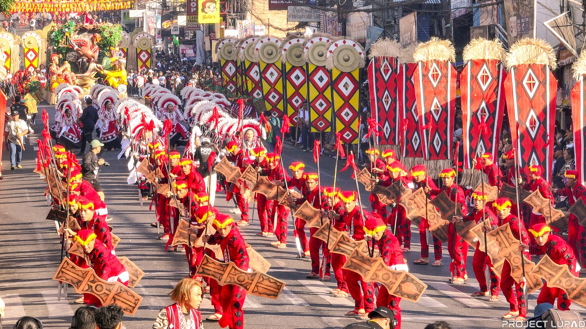

REPUBLIC OF THE PHILIPPINES
REPUBLIC OF THE PHILIPPINES
The name "Bukidnon" literally translates to "mountain dweller." For centuries, the high plateaus and dense forests of North Mindanao have served as the ancestral domain of seven distinct tribes.
Unlike many coastal provinces, Bukidnon’s history is defined by its inland isolation, which preserved its unique indigenous culture long after the arrival of Spanish and American forces.

Spanish Jesuits began establishing missions in the area then known as "Malaybalay." The region was part of the province of Misamis for many years.
Under American administration, Bukidnon was separated from Misamis and became a sub-province of Agusan through Act No. 1693.
On September 1, 1914, Department Order No. 1 officially established Bukidnon as an independent province with its own government.

The history of Bukidnon is inseparable from its indigenous people: the **Talaandig, Higaonon, Bukidnon, Umayamnon, Matigsalug, Tigwahanon, and Manobo**.
These tribes have inhabited the territory since time immemorial, maintaining a sacred relationship with the mountains (Kitanglad and Kalatungan). Their historical resistance against cultural assimilation has made Bukidnon the cultural heart of Mindanao.